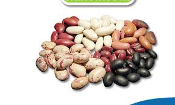
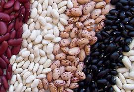

Los Porotos


Tiene micronutrientes como el hierro (mineral indispensable para transportar el oxígeno en el cuerpo, y
prevenir la anemia), potasio, magnesio, zinc y fósforo. Forma parte de las dietas recetadas dado que
ayuda a
bajar de peso, proporcionando un mayor sentido de saciedad que un cereal tradicional.